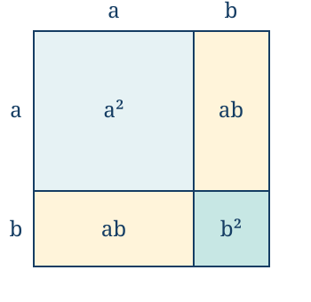
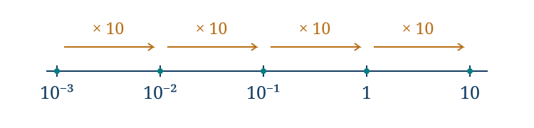

Potencias, raíces y notación científica
← Fracciones, razones, proporciones y porcentajes · Índice del libro · Siguiente →
Una hoja se dobla por la mitad y vuelve a doblarse de la misma manera. Si cada doblez duplicara el espesor, diez dobleces producirían mil veinticuatro capas. Diez repeticiones de una operación muy sencilla bastan para que el resultado se vuelva difícil de imaginar. En una hoja real intervienen el tamaño, la resistencia y la geometría del pliegue; el cálculo de las capas describe un modelo ideal. Precisamente por eso podemos examinar con claridad qué hace la duplicación.
El problema inverso aparece al construir un cuadrado de área dos: conocemos el producto de dos lados iguales y buscamos el lado. Entre ambas preguntas nace un lenguaje que permite contar multiplicaciones, deshacerlas y comparar cantidades que quedan lejos de nuestra experiencia cotidiana. Una potencia conserva la historia de un producto; una raíz recupera una medida a partir de él.
El producto \(2^3\cdot2^4\) reúne siete factores iguales a dos y vale \(128\). Encontrar los números cuyo cuadrado es nueve exige, en cambio, recuperar dos signos posibles. Para comparar \(6\cdot10^{-4}\) con \(2\cdot10^{-3}\) debemos atender a la escala: son seis diezmilésimas y dos milésimas, de modo que la segunda cantidad es mayor. La lectura de la base, del exponente y de la operación permite distinguir estas preguntas.
Contar factores
Si partimos de una capa, después de un doblez ideal tenemos dos; después de otro, \(2\cdot2\); después del tercero, \(2\cdot2\cdot2\). Escribimos estos productos como \(2^1\), \(2^2\) y \(2^3\). Para un número real \(a\) y un entero positivo \(n\), la potencia \(a^n\) es el producto de \(n\) factores iguales a \(a\). El número \(a\) es la base y \(n\) es el exponente. En particular, \(a^1=a\). La definición puede expresarse paso a paso mediante \(a^{n+1}=a^n a\).
La base dice qué factor se repite; el exponente, cuántas veces aparece. Por eso \(3^4=3\cdot3\cdot3\cdot3=81\), mientras que \(4^3=64\). El producto \(3\cdot4=12\) responde a otra operación. Para \(n>0\), \(0^n=0\): todos sus factores son cero.
Problema 1. Diez dobleces ideales
Enunciado. Una hoja tiene un espesor inicial de \(0{,}1\) milímetros. Suponiendo que cada doblez duplica el número de capas y que estas conservan su espesor, calcula el espesor tras diez dobleces y el factor de aumento desde el séptimo hasta el décimo.
Solución. El espesor inicial corresponde a una capa. Cada doblez multiplica por dos, de modo que diez dobleces dan \(2^{10}=1024\) capas. El espesor del modelo es \(0{,}1\cdot1024=102{,}4\) milímetros. Entre el séptimo doblez y el décimo hay tres duplicaciones: el factor es \(2^3=8\). Se comprueba dividiendo \(1024\) capas por las \(2^7=128\) que había antes. Estos resultados dependen de los supuestos: no aseguran que una hoja concreta pueda doblarse diez veces ni que las capas queden sin espacios.
Cuando la base es negativa, cada pareja de factores negativos tiene producto positivo. Un número par de factores queda enteramente agrupado en parejas; un número impar deja un factor negativo. Así, para \(a>0\), \((-a)^{2k}=a^{2k}\) y \((-a)^{2k+1}=-a^{2k+1}\), con los exponentes positivos que correspondan. La posición de los paréntesis determina si el signo pertenece a la base.
Problema 2. El signo que queda fuera
Enunciado. Calcula \((-3)^4\), \(-3^4\) y \((-3)^3\). Explica por qué las dos primeras expresiones no tienen el mismo valor.
Solución. En \((-3)^4\), la base completa es \(-3\): cuatro factores negativos producen \(81\). En \(-3^4\) se calcula primero la potencia de base tres y luego se toma su opuesto; el resultado es \(-81\). Finalmente, \((-3)^3=(-3)(-3)(-3)=-27\). Para leer una potencia conviene delimitar su base antes de calcular. La expresión \(-3^4\) podría escribirse \(-(3^4)\) sin cambiar su significado.
Las leyes nacen del producto
Multiplicar \(a^m\) por \(a^n\), con \(m,n\) enteros positivos, reúne \(m+n\) factores iguales. Elevar \(a^m\) a la potencia \(n\) reúne \(n\) grupos de \(m\) factores. Obtenemos
\[a^m a^n=a^{m+n},\qquad (a^m)^n=a^{mn}.\]
La primera igualdad suma exponentes porque reúne factores; la segunda los multiplica porque cuenta grupos. También \((ab)^n=a^n b^n\): al multiplicar \(n\) veces \(ab\) podemos reagrupar los \(n\) factores \(a\) y los \(n\) factores \(b\). La conmutatividad de la multiplicación de números reales permite esa reagrupación. Para \(b\ne0\), el mismo argumento da \((a/b)^n=a^n/b^n\).
Podemos examinar qué ocurre con una suma dibujando un cuadrado de lado \(a+b\), con \(a,b>0\). Al dividir cada lado en las longitudes \(a\) y \(b\), su área queda repartida entre dos cuadrados, de áreas \(a^2\) y \(b^2\), y dos rectángulos de área \(ab\). El área total es por ello \((a+b)^2=a^2+2ab+b^2\). Los productos cruzados aparecen al multiplicar cada sumando de un factor por cada sumando del otro; desarrollar \((a+b)(a+b)\) mediante distributividad prueba la misma identidad para cualesquiera reales \(a,b\). En el dibujo, las marcas de los bordes permiten reconocer esos cuatro productos y comprobar que los dos rectángulos tienen igual área, aunque sus lados estén intercambiados.

Problema 3. Reunir sin desarrollar todo
Enunciado. Calcula \(\dfrac{2^5\cdot2^3}{2^6}\) y justifica cada transformación.
Solución. El numerador contiene ocho factores iguales a dos, así que es \(2^8\). Dividir por \(2^6\) cancela seis factores no nulos; quedan dos y obtenemos \(2^2=4\). Podemos comprobarlo con los valores enteros: \(32\cdot8/64=256/64=4\). La cancelación utiliza que dos es distinto de cero; el argumento no justificaría dividir potencias de base cero.
Problema 4. Dos maneras de agrupar
Enunciado. Compara \((2^3)^2\), \(2^{3^2}\) y \((2\cdot3)^2\). ¿Es cierta la igualdad \((2+3)^2=2^2+3^2\)?
Solución. La primera potencia contiene dos grupos de tres doses: \((2^3)^2=2^6=64\). En la segunda, el exponente completo es \(3^2=9\), por lo que \(2^{3^2}=2^9=512\). La tercera tiene base seis y vale \(36\); también \(2^2\cdot3^2=4\cdot9=36\). Para la suma, \((2+3)^2=25\), mientras que \(2^2+3^2=13\). Faltan los dos productos cruzados \(2\cdot2\cdot3=12\). Los paréntesis y el tipo de operación explican las cuatro respuestas.
Dividir para extender los exponentes
Con \(a\ne0\) y \(m>n>0\), cancelar \(n\) factores en \(a^m/a^n\) deja \(a^{m-n}\). Si los exponentes son iguales, la división vale uno. Conservar la misma regla cuando \(m=n\) nos lleva a definir
\[a^0=1\qquad(a\ne0).\]
Para \(m<n\), después de cancelar quedan factores en el denominador. La regla sugiere definir, para \(n\) entero positivo,
\[a^{-n}=\frac1{a^n}\qquad(a\ne0).\]
El signo negativo del exponente indica un recíproco. Por ejemplo, \(2^{-3}=1/8\) y \((1/2)^{-3}=8\). El signo del valor depende de la base y de la paridad del exponente, no del hecho de que este sea negativo.
Con estas definiciones, las leyes del producto, del cociente y de la potencia de una potencia valen para todos los exponentes enteros cuando las bases son no nulas. Se puede verificar el caso mixto escribiendo \(a^m a^{-n}=a^m/a^n\) y cancelando; si ambos exponentes son negativos se multiplican recíprocos. En particular, \(a^m/a^n=a^{m-n}\) para \(a\ne0\). Las leyes de productos y cocientes con exponente entero negativo exigen igualmente que todas las bases que deban invertirse sean distintas de cero.
La base cero queda fuera de esta extensión. \(0^{-n}\) exigiría dividir por cero. Tampoco asignaremos valor a \(0^0\) en este capítulo: la deducción anterior parte de un cociente \(a^n/a^n\) con \(a\ne0\). En otros contextos se adoptan convenciones específicas para \(0^0\); ninguna autoriza a usar aquí una división por cero.
Problema 5. Retroceder tres pasos
Enunciado. Una cantidad se multiplica por tres en cada paso. En el paso cero vale \(18\). Halla sus valores en los pasos \(-1\) y \(-3\), suponiendo que el mismo modelo se extiende hacia atrás.
Solución. Para retroceder un paso debemos deshacer una multiplicación por tres: dividimos \(18\) por tres y obtenemos seis. Tres retrocesos dan \(18/3^3=18/27=2/3\). La fórmula \(18\cdot3^k\) recoge ambos casos: con \(k=-1\) da seis y con \(k=-3\) da \(2/3\). Al avanzar desde \(2/3\) tres pasos obtenemos \(2\), \(6\) y \(18\), lo que verifica el resultado. Los índices negativos sitúan pasos anteriores; los valores de este modelo siguen siendo positivos.
Problema 6. Un exponente negativo sobre una fracción
Enunciado. Calcula \(\dfrac{(2/3)^{-2}}{(2/3)^0}\) y decide cuáles de \(0^5\), \(5^0\), \(0^{-5}\) y \(0^0\) están definidos con nuestras convenciones.
Solución. Como \(2/3\ne0\), su potencia cero vale uno. Su potencia \(-2\) es el recíproco de \(4/9\), es decir, \(9/4\). El cociente pedido vale por tanto \(9/4\). Entre las otras expresiones, \(0^5=0\) por producto repetido y \(5^0=1\). La expresión \(0^{-5}\) no existe como número real porque exigiría \(1/0^5=1/0\); \(0^0\) queda sin definir en este tratamiento. Escribir un exponente no garantiza que se hayan cumplido las condiciones de su definición.
Problema 7. Las restricciones sobreviven a la simplificación
Enunciado. Simplifica \(\dfrac{x^{-2}y^3}{xy^{-1}}\) e indica para qué reales \(x,y\) tiene sentido la expresión inicial.
Solución. \(x^{-2}\) exige \(x\ne0\) y \(y^{-1}\) exige \(y\ne0\). Con estas condiciones, el denominador \(xy^{-1}=x/y\) tampoco es cero. Reunimos las potencias de cada base: el exponente de \(x\) queda \(-2-1=-3\) y el de \(y\) queda \(3-(-1)=4\). El resultado es \(x^{-3}y^4=y^4/x^3\), siempre con \(x\ne0\) e \(y\ne0\). La última fórmula aislada admitiría \(y=0\), pero ese valor no pertenecía al dominio original. Para comprobar los signos de los exponentes también podemos escribir la expresión como \((y^3/x^2)/(x/y)\) y multiplicar por \(y/x\).
Potencias con exponentes enteros
Para exponentes enteros positivos se admite cualquier base real. Al incluir exponentes cero o negativos se exige base no nula; las filas indican dónde interviene esa restricción.
| Propiedad | Fórmula y condiciones de uso |
|---|---|
| Definición y recurrencia | \(a^1=a\) y \(a^{n+1}=a^n a\), con \(n\ge1\) entero. |
| Producto de igual base | \(a^m a^n=a^{m+n}\). Para \(m,n\in\mathbb Z\), se exige \(a\ne0\); con ambos positivos también se admite \(a=0\). |
| Cociente de igual base | \(a^m/a^n=a^{m-n}\), con \(a\ne0\) y \(m,n\in\mathbb Z\). |
| Potencia de una potencia | \((a^m)^n=a^{mn}\). Para exponentes enteros cualesquiera, \(a\ne0\); con ambos positivos también se admite cero. |
| Potencia de un producto | \((ab)^n=a^n b^n\). Si \(n\ge1\) es entero, \(a,b\) son cualesquiera; si \(n\le0\), se exige \(a,b\ne0\). |
| Potencia de un cociente | \((a/b)^n=a^n/b^n\), con \(b\ne0\). Para \(n\le0\) se exige además \(a\ne0\). |
| Exponente cero y negativo | \(a^0=1\) y \(a^{-n}=1/a^n\), con \(a\ne0\) y \(n\ge1\) entero. |
| Base cero y signos | \(0^n=0\) si \(n\ge1\). Para \(a>0\), \((-a)^n=a^n\) si \(n\) es par y \((-a)^n=-a^n\) si es impar. Aquí no se define \(0^0\) ni una potencia negativa de cero. |
| Cuadrado de una suma | \((a+b)^2=a^2+2ab+b^2\), para reales \(a,b\). Elevar una suma no equivale a sumar las potencias. |
Pruebas. Apéndice: «Potencias enteras y conteo de factores», «Productos de binomios, cuadrados y cubos».
Recuperar una medida
Un cuadrado de área nueve tiene lado tres. La ecuación \(x^2=9\), en cambio, admite \(x=3\) y \(x=-3\). La geometría del lado exige una longitud no negativa; la ecuación numérica admite ambos signos. La notación de raíz cuadrada conserva esa elección: para \(a\ge0\), \(\sqrt a\) es el único real no negativo cuyo cuadrado es \(a\).
La unicidad tiene una explicación breve. Si \(0\le u<v\), entonces \(v^2-u^2=(v-u)(v+u)>0\), de modo que \(u^2<v^2\). Dos números no negativos distintos no pueden tener el mismo cuadrado. La existencia para cualquier \(a\ge0\), incluso cuando el lado no es racional, usa la propiedad de completitud de la recta real que presentamos en el capítulo uno. Podemos verla de cerca.
Para \(a>0\), reunamos los números \(t\ge0\) tales que \(t^2\le a\). El cero pertenece al conjunto y \(a+1\) es una cota superior, por lo que la completitud proporciona su menor cota superior \(s\). Queremos probar que \(s^2=a\). La elección de un supremo nos da dos formas de llegar a una contradicción: si su cuadrado queda por debajo de \(a\), intentaremos avanzar un poco más y seguir dentro del conjunto; si queda por encima, intentaremos retroceder un poco y obtener todavía una cota superior.
Supongamos primero que \(s^2<a\). Al avanzar de \(s\) a \(s+h\), el cuadrado aumenta en \(2sh+h^2\). Elegir \(h<1\) permite acotar ese aumento por \((2s+1)h\); para que quepa en la diferencia disponible, escogemos además \(h<(a-s^2)/(2s+1)\). Ambos límites son positivos, así que existe un \(h\) que los cumple. Entonces \((s+h)^2=s^2+2sh+h^2\le s^2+(2s+1)h<a\). El número \(s+h\) pertenecería al conjunto y superaría su cota superior \(s\), lo que es imposible.
Si \(s^2>a\), tenemos \(s>0\) y podemos elegir \(0<h<\min\{s,(s^2-a)/(2s)\}\). La primera restricción mantiene \(s-h\) positivo y la segunda asegura \((s-h)^2>s^2-2sh>a\). Como el cuadrado crece entre los no negativos, todos los elementos del conjunto quedan por debajo de \(s-h\). Habríamos obtenido una cota superior menor que \(s\), en contra de su elección como la menor. Las dos alternativas quedan descartadas y por tanto \(s^2=a\). Para \(a=0\), la raíz es cero. La completitud ha permitido obtener el número exacto que las aproximaciones decimales van situando entre cotas cada vez más próximas.
Problema 8. Un lado y dos soluciones
Enunciado. Un cuadrado tiene área \(18\) centímetros cuadrados. Determina exactamente su lado. Después resuelve \(x^2=18\) en los reales y compara ambas respuestas.
Solución. El lado es \(\sqrt{18}\) centímetros, porque es una longitud no negativa cuyo cuadrado debe valer \(18\). Como \((3\sqrt2)^2=9\cdot2=18\) y \(3\sqrt2>0\), la unicidad de la raíz da \(\sqrt{18}=3\sqrt2\). Para la ecuación numérica también sirve el opuesto: \(x=\pm3\sqrt2\). No hay más soluciones: si \(x\) es no negativo, la unicidad obliga a tomar la raíz principal; si es negativo, \(-x\) es no negativo y tiene el mismo cuadrado. La raíz \(\sqrt{18}\) tiene un solo valor; el signo doble aparece al resolver la ecuación.
La misma idea define la raíz enésima. Para un entero \(n\ge2\) par, \(\sqrt[n]{a}\) existe en los reales si \(a\ge0\) y designa la raíz no negativa. Para \(n\) impar existe para cualquier real \(a\) y tiene el mismo signo que él. La función \(t\mapsto t^n\) es estrictamente creciente en los no negativos: si \(0\le u<v\), entonces \(u^n<v^n\), como se ve comparando los factores o usando
\[v^n-u^n=(v-u)(v^{n-1}+v^{n-2}u+\cdots+u^{n-1})>0.\]
Para exponentes impares también crece en los negativos, porque \((-t)^n=-t^n\), y los valores de distinto signo conservan su orden. De ahí la unicidad. La existencia en los no negativos sigue el argumento de completitud anterior: para \(0\le t\le M\) y \(0<h\le1\), el aumento \((t+h)^n-t^n\) no supera \(nh(M+1)^{n-1}\), por la identidad de diferencia de potencias. Esa cota permite los mismos pequeños desplazamientos de la menor cota superior. Para radicandos negativos e índice impar tomamos el opuesto de la raíz del valor positivo correspondiente.
Problema 9. El índice decide el dominio
Enunciado. Calcula en los reales \(\sqrt[3]{-125}\) y \(\sqrt[4]{81}\). Decide qué ocurre con \(\sqrt[4]{-81}\) y resuelve \(x^4=81\).
Solución. Como \((-5)^3=-125\), la raíz cúbica es \(-5\). Como \(3^4=81\) y tres es no negativo, \(\sqrt[4]{81}=3\). Ninguna cuarta potencia real es negativa, de modo que \(\sqrt[4]{-81}\) no tiene valor real. La ecuación \(x^4=81\) admite tres y menos tres; son las únicas soluciones porque \(|x|^4=81\) obliga a \(|x|=3\) por la unicidad en los no negativos. El índice par restringe el radicando, pero no elimina la posibilidad de soluciones negativas en una ecuación de potencia.
Problema 10. El cuadrado borra un signo
Enunciado. Simplifica \(\sqrt{(x-2)^2}\). Evalúa el resultado para \(x=-1\) y determina cuándo se puede escribir simplemente \(x-2\).
Solución. El número \(|x-2|\) es no negativo y su cuadrado vale \((x-2)^2\). Por la definición de raíz principal, \(\sqrt{(x-2)^2}=|x-2|\). Para \(x=-1\), el valor es \(|-3|=3\), no \(-3\). La expresión coincide con \(x-2\) cuando \(x-2\ge0\), es decir, cuando \(x\ge2\); para \(x<2\) coincide con \(2-x\). En general, \(\sqrt{u^2}=|u|\) para todo real \(u\).
Operar con radicales sin perder el dominio
Para \(a,b\ge0\), el producto \(\sqrt a\sqrt b\) es no negativo y su cuadrado vale \(ab\). La unicidad prueba
\[\sqrt{ab}=\sqrt a\sqrt b.\]
Si además \(b>0\), el mismo razonamiento con un cociente da \(\sqrt{a/b}=\sqrt a/\sqrt b\). Para raíces de índice par se mantiene la exigencia de radicandos no negativos, con denominador positivo en un cociente. Para índice impar estas identidades admiten radicandos de cualquier signo y denominador no nulo: el producto o cociente de las raíces tiene la potencia requerida y la raíz impar es única.
Extraer un factor cuadrado usa la primera identidad. Por ejemplo, \(\sqrt{72}=\sqrt{36\cdot2}=6\sqrt2\). Con variables hay que conservar el valor absoluto: \(\sqrt{x^2y}=|x|\sqrt y\) si \(y\ge0\). Esta afirmación da una condición suficiente para separar los factores; no pretende describir todos los casos en que el producto aislado \(x^2y\) es no negativo.
Una suma requiere otro examen. \(\sqrt{9+16}=5\), mientras que \(\sqrt9+\sqrt{16}=7\). Los radicales no se distribuyen sobre sumas. Podemos sumar \(2\sqrt3\) y \(5\sqrt3\) porque son dos y cinco veces el mismo número; \(\sqrt2+\sqrt3\) no comparte ese factor inmediato y puede quedarse como suma exacta.
Problema 11. Encontrar el factor común
Enunciado. Reduce \(\sqrt{72}-\sqrt8+\sqrt{50}\) a un múltiplo de un solo radical.
Solución. Buscamos cuadrados dentro de los radicandos: \(72=36\cdot2\), \(8=4\cdot2\) y \(50=25\cdot2\). Las raíces son \(6\sqrt2\), \(2\sqrt2\) y \(5\sqrt2\). Por distributividad, la expresión vale \((6-2+5)\sqrt2=9\sqrt2\). La resta afecta al término completo \(2\sqrt2\). El radicando común permite reunir coeficientes; sumar o restar los radicandos habría cambiado la operación.
Problema 12. Dos raíces que se compensan
Enunciado. Calcula \(\sqrt{3/5}\sqrt{15}\) y \(\sqrt{49/9}\). Explica por qué no se puede justificar \(\sqrt{(-4)(-9)}=\sqrt{-4}\sqrt{-9}\) en los reales.
Solución. Los radicandos del primer producto son positivos, así que reunimos las raíces: \(\sqrt{(3/5)15}=\sqrt9=3\). El segundo cociente tiene denominador positivo y vale \(\sqrt{49}/\sqrt9=7/3\). En la última escritura, el miembro izquierdo es \(\sqrt{36}=6\), pero las dos raíces del miembro derecho no existen en los reales. Que el producto de los radicandos sea positivo no basta para separar raíces pares: cada factor debe admitir su propia raíz real.
Problema 13. Quitar una raíz del denominador
Enunciado. Escribe \(\dfrac1{\sqrt5-2}\) sin radicales en el denominador y comprueba el resultado.
Solución. El denominador no es cero: \(\sqrt5>2\) porque \(5>4\). Multiplicamos numerador y denominador por \(\sqrt5+2\), que tampoco es cero. Los términos cruzados se cancelan al desarrollar el producto: \((\sqrt5-2)(\sqrt5+2)=5-4=1\). Por tanto
\[\frac1{\sqrt5-2}=\frac{\sqrt5+2}{1}=\sqrt5+2.\]
La comprobación consiste en multiplicar \(\sqrt5+2\) por el denominador original: el resultado es uno. Esta transformación, llamada racionalización, conserva el número porque multiplica la fracción por uno. Resulta útil para comparar o calcular; la expresión inicial ya era una respuesta exacta.
Raíces reales y operaciones permitidas
En las filas de índice general, \(n\ge2\) es entero. Las condiciones deben permitir cada raíz que aparece a ambos lados de la igualdad.
| Propiedad | Fórmula y condiciones de uso |
|---|---|
| Raíz de índice par | Para \(n\) par y \(a\ge0\), \(\sqrt[n]{a}\) es no negativa y \((\sqrt[n]{a})^n=a\). |
| Raíz de índice impar | Para \(n\) impar y cualquier real \(a\), la raíz es única, tiene el signo de \(a\) y \((\sqrt[n]{a})^n=a\). |
| Raíz del cuadrado | \(\sqrt{u^2}=\lvert u\rvert\), para todo real \(u\). |
| Producto, índice par | \(\sqrt[n]{ab}=\sqrt[n]{a}\sqrt[n]{b}\), con \(n\) par y \(a,b\ge0\). |
| Cociente, índice par | \(\sqrt[n]{a/b}=\sqrt[n]{a}/\sqrt[n]{b}\), con \(n\) par, \(a\ge0\) y \(b>0\). |
| Producto y cociente, índice impar | Las dos identidades anteriores valen para \(a,b\in\mathbb R\) si \(n\) es impar; en el cociente se exige \(b\ne0\). |
| Extraer un cuadrado | \(\sqrt{x^2y}=\lvert x\rvert\sqrt y\), con \(y\ge0\). Esta es una condición suficiente para separar los factores. |
| Radicales semejantes | \(u\sqrt a+v\sqrt a=(u+v)\sqrt a\), con \(a\ge0\). Se reúnen coeficientes de un mismo radical. |
| Conjugados | \((\sqrt a-b)(\sqrt a+b)=a-b^2\), con \(a\ge0\). Para usarlos al racionalizar se comprueba que el denominador original y el factor por el que se amplifica sean no nulos. |
Pruebas. Apéndice: «Existencia y unicidad de las raíces reales», «Productos, cocientes y sumas de radicales».
Exponentes que expresan raíces
Busquemos una extensión de las potencias que haga válida \((a^{1/n})^n=a\). Para \(a>0\), la raíz positiva es la elección compatible con las potencias enteras positivas. Definimos, para un entero \(m\) y un entero positivo \(n\),
\[a^{m/n}=(\sqrt[n]{a})^m\qquad(a>0).\]
La raíz de índice uno de cualquier real se toma igual a ese real: \(\sqrt[1]{a}=a\); así la definición recupera las potencias de exponente entero.
Si \(m<0\), la raíz es positiva y admite recíproco. Esta definición debe dar el mismo número cuando una fracción se escribe de dos maneras. Si \(m/n=p/q\), entonces \(mq=pn\). Los números positivos \((\sqrt[n]{a})^m\) y \((\sqrt[q]{a})^p\), elevados a \(nq\), dan respectivamente \(a^{mq}\) y \(a^{pn}\); son iguales. La unicidad de la raíz positiva de índice \(nq\) obliga a que los números iniciales coincidan. Así, el valor depende del racional, no de la fracción que lo representa.
Las leyes de exponentes se conservan para bases positivas y exponentes racionales. Para comprobar \(a^r a^s=a^{r+s}\), escribimos \(r=M/N\), \(s=P/N\) con un denominador común positivo. Si \(u=\sqrt[N]{a}\), el miembro izquierdo es \(u^M u^P=u^{M+P}\), que es el derecho. Para \((a^r)^s=a^{rs}\), con \(r=m/n\) y \(s=p/q\), elevamos ambos miembros positivos a \(nq\): los dos dan \(a^{mp}\). La unicidad vuelve a probar la igualdad. El mismo recurso justifica \((ab)^r=a^r b^r\) para \(a,b>0\).
Se puede añadir \(0^r=0\) cuando \(r\) es racional positivo; los exponentes cero o negativos siguen excluidos para esa base. Para una base negativa, reducimos primero el exponente racional a una fracción \(m/n\) con denominador positivo. Si \(n\) es impar, definimos \(a^{m/n}=(\sqrt[n]{a})^m\); si \(n\) es par, no le asignamos valor real. Por ejemplo, \((-8)^{2/3}=(\sqrt[3]{-8})^2=4\). Reducir la fracción es esencial: \(2/6=1/3\), así que \((-8)^{2/6}\) se interpreta mediante la raíz cúbica y vale \(-2\), aunque \(\sqrt[6]{-8}\) no exista en los reales. Esta convención define valores, pero no extiende sin restricciones todas las leyes demostradas para bases positivas. La raíz principal que aparece al encadenar operaciones puede alterar un signo.
Problema 14. Una fracción en el exponente
Enunciado. Calcula \(16^{3/4}\) y \(27^{-2/3}\) explicando el orden de las operaciones.
Solución. La raíz cuarta positiva de dieciséis es dos, por lo que \(16^{3/4}=2^3=8\). Para la otra potencia, la raíz cúbica positiva de veintisiete es tres. El exponente \(-2\) sobre ese resultado indica un recíproco: \(27^{-2/3}=3^{-2}=1/9\). Podemos comprobar la primera respuesta elevándola a la cuarta: \(8^4=16^3=4096\). Para la segunda, la potencia positiva \(27^{2/3}=9\) multiplicada por \(1/9\) da uno. Ambas bases son positivas y satisfacen las condiciones de la definición.
Problema 15. Una ley con una hipótesis necesaria
Enunciado. Se propone aplicar \((a^r)^s=a^{rs}\) a \(a=-8\), \(r=2\) y \(s=1/2\). Compara la raíz principal de \((-8)^2\) con \((-8)^1\) y explica el resultado.
Solución. La primera expresión, leída como raíz cuadrada principal, es \(\sqrt{(-8)^2}=\sqrt{64}=8\). La segunda es \(-8\). La igualdad propuesta falla. El producto de exponentes sugeriría \(2(1/2)=1\), pero la ley demostrada suponía \(a>0\). La raíz principal recupera el valor absoluto de la base al deshacer un cuadrado. La raíz cúbica \(\sqrt[3]{-8}=-2\) sí tiene sentido real; su existencia no extiende automáticamente todas las leyes de exponentes racionales a bases negativas.
Problema 16. Resolver conservando el signo permitido
Enunciado. Resuelve \(x^{2/3}=4\) en los reales con la convención de fracción reducida. Explica qué cambia si el problema exige además \(x\ge0\).
Solución. El exponente \(2/3\) está reducido y su denominador es impar, así que admite bases negativas; el cero también está definido porque el exponente es positivo. Para cualquier real \(x\), la ecuación significa \((\sqrt[3]{x})^2=4\). Ponemos \(u=\sqrt[3]{x}\) y obtenemos \(u=2\) o \(u=-2\). Al elevar al cubo recuperamos \(x=8\) o \(x=-8\). Ambos sirven: las raíces cúbicas son dos y menos dos, cuyos cuadrados valen cuatro. Si además se exige \(x\ge0\), solo queda ocho. La restricción debe proceder del enunciado o del dominio de una operación; imponerla por costumbre habría perdido una solución.
Exponentes racionales
Las leyes generales siguientes se han justificado para bases positivas. La convención para bases negativas define ciertos valores, pero no extiende automáticamente todas esas leyes.
| Propiedad | Fórmula y condiciones de uso |
|---|---|
| Definición | \(a^{m/n}=(\sqrt[n]{a})^m\), con \(a>0\), \(m\in\mathbb Z\) y \(n\ge1\) entero. Para índice uno se toma la propia base. |
| Mismo racional, mismo valor | Si \(m/n=p/q\), con denominadores positivos, entonces \(a^{m/n}=a^{p/q}\) para \(a>0\). |
| Producto y cociente | \(a^r a^s=a^{r+s}\) y \(a^r/a^s=a^{r-s}\), con \(a>0\) y \(r,s\in\mathbb Q\). |
| Potencia de una potencia | \((a^r)^s=a^{rs}\), con \(a>0\) y \(r,s\in\mathbb Q\). |
| Potencia de un producto | \((ab)^r=a^r b^r\), con \(a,b>0\) y \(r\in\mathbb Q\). |
| Base cero | \(0^r=0\) cuando \(r\in\mathbb Q\) y \(r>0\). No se incluyen exponentes cero o negativos. |
| Base negativa | Para \(a<0\) se reduce \(m/n\) con \(n>0\). Si \(n\) es impar, \(a^{m/n}=(\sqrt[n]{a})^m\); si \(n\) es par, no se define un valor real. |
Pruebas. Apéndice: «Exponentes racionales sin ambigüedad».
Comparar antes de aproximar
Para \(0\le u<v\), las potencias naturales conservan el orden. En consecuencia, las raíces de índice fijo conservan el orden de los radicandos donde las hemos definido. Así, \(\sqrt7<\sqrt8\) sin calcular decimales. Para comparar \(\sqrt7\) con \(8/3\), ambos positivos, podemos comparar sus cuadrados: \(7<64/9\) porque \(63<64\). La comparación es reversible precisamente porque restringimos la comparación de cuadrados a números no negativos.
Al variar el exponente racional sobre una base fija, importa si la base supera uno. Si \(a>1\) y \(r<s\), entonces \(a^s/a^r=a^{s-r}>1\), de modo que \(a^r<a^s\). Para justificar la última desigualdad, escribimos \(s-r=m/n>0\): la raíz \(a^{1/n}\) supera uno, pues su potencia \(n\) es mayor que uno, y su potencia \(m\) también. Si \(0<a<1\), el recíproco \(1/a\) supera uno y se obtiene la desigualdad inversa: \(a^r>a^s\). Para \(a=1\) todos los valores son uno.
Problema 17. Ordenar sin calculadora
Enunciado. Ordena \(\sqrt7\), \(8/3\) y \(\sqrt8\). Después compara \((1/3)^{-2}\) con \((1/3)^{-1}\).
Solución. Los tres primeros números son positivos, por lo que sus cuadrados permiten compararlos. Expresados en novenos, esos cuadrados son \(63/9\), \(64/9\) y \(72/9\). Resulta \(\sqrt7<8/3<\sqrt8\). En la segunda comparación, los recíprocos dan \((1/3)^{-2}=9\) y \((1/3)^{-1}=3\). El exponente \(-2\) es menor que \(-1\), pero produce el valor mayor porque la base está entre cero y uno. La cuenta confirma la regla de orden para esa clase de bases.
Problema 18. Una raíz entre dos decimales
Enunciado. Demuestra que \(1{,}41<\sqrt2<1{,}42\) sin usar una aproximación ya calculada de \(\sqrt2\).
Solución. Elevamos los dos extremos positivos al cuadrado. Tenemos \(1{,}41^2=1{,}9881<2\) y \(1{,}42^2=2{,}0164>2\). Como el cuadrado crece en los no negativos, la raíz positiva de dos queda entre esos extremos. La afirmación es una cota, no una igualdad decimal. En particular, usar \(1{,}41\) como aproximación por defecto deja una diferencia positiva menor que \(0{,}01\). El capítulo siguiente desarrollará cómo expresar y controlar estos errores.
Comparaciones de potencias y raíces
Las condiciones sobre base, exponente y radicando determinan qué comparación se conserva.
| Propiedad | Fórmula y condiciones de uso |
|---|---|
| Potencias naturales | \(0\le u<v\Longrightarrow u^n<v^n\), con \(n\ge1\) entero. Las raíces de índice fijo conservan el orden en su dominio real. |
| Base mayor que uno | Si \(a>1\) y \(r<s\) son racionales, entonces \(a^r<a^s\). |
| Base entre cero y uno | Si \(0<a<1\) y \(r<s\) son racionales, entonces \(a^r>a^s\). Para \(a=1\), todas las potencias racionales valen uno. |
Pruebas. Apéndice: «Comparar potencias naturales», «Orden al cambiar el exponente».
Escribir cantidades a otra escala
La escritura \(0{,}0000064\) hace trabajar a la vista para contar ceros. La igualdad \(0{,}0000064=6{,}4\cdot10^{-6}\) separa dos datos: un coeficiente de tamaño ordinario y una escala decimal. Un número real no nulo está en notación científica normalizada cuando se escribe
\[c\cdot10^k,\qquad 1\le |c|<10,\qquad k\in\mathbb Z.\]
Para cantidades positivas basta \(1\le c<10\). El cero se escribe cero y no tiene un exponente normalizado único. La coma decimal que usamos en el texto tiene el mismo significado que el punto decimal de algunas calculadoras; no separa millares.
La normalización es única: si dos exponentes fueran distintos, pongamos \(k<\ell\), la igualdad \(c10^k=d10^\ell\) obligaría a \(|c|=|d|10^{\ell-k}\ge10\), contradiciendo \(|c|<10\). Intercambiar las dos escrituras descarta el otro orden de los exponentes; una vez que coinciden, dividir por esa misma potencia de diez determina un único coeficiente.
La existencia se apoya en que las potencias de diez crecen sin cota y sus recíprocos se acercan cuanto se quiera a cero: entre dos potencias consecutivas queda cualquier número positivo. En efecto, \(10^n\ge n+1\) para todo entero \(n\ge0\), como se comprueba empezando en \(n=0\) y multiplicando por diez en cada paso; la propiedad arquimediana de los reales permite superar cualquier cota. Aplicada al recíproco de una cantidad positiva, da también una potencia de diez menor que ella.
Para un real \(x\ne0\), podemos elegir un natural \(N\) con \(10^{-N}\le|x|<10^N\). Entre los enteros desde \(-N\) hasta \(N\) hay un mayor \(k\) que cumple \(10^k\le|x|\): la lista es finita y contiene al menos a \(-N\). Como \(10^N>|x|\), el elegido cumple \(k<N\), y su maximalidad da \(|x|<10^{k+1}\). Al tomar \(c=x/10^k\) obtenemos el coeficiente normalizado. Esta elección localiza el exponente mediante dos potencias consecutivas. Para un decimal finito basta localizar su primera cifra no nula.
En una escala lineal, distancias iguales representan diferencias iguales. Para representar muchas escalas a la vez podemos dar el mismo espacio a cada multiplicación por diez. Los puntos \(10^{-3}\), \(10^{-2}\), \(10^{-1}\), \(1\) y \(10\) quedan igualmente separados en el siguiente dibujo. Sus diferencias numéricas no son iguales. Esta es la idea de una escala logarítmica decimal; estudiaremos su construcción y los valores intermedios en el capítulo de logaritmos.

Problema 19. Normalizar sin cambiar el valor
Enunciado. Escribe en notación científica \(0{,}0000064\), \(73\,000\,000\) y \(-0{,}0032\). Explica cómo verificar los exponentes.
Solución. La primera cantidad es \(6{,}4\cdot10^{-6}\): multiplicar \(6{,}4\) por una millonésima sitúa su seis en la sexta posición decimal. La segunda es \(7{,}3\cdot10^7\), porque \(7{,}3\) veces diez millones da setenta y tres millones. La tercera es \(-3{,}2\cdot10^{-3}\). El signo pertenece al coeficiente; su valor absoluto es \(3{,}2\), dentro del intervalo requerido. En cada caso podemos reconstruir la escritura inicial multiplicando o dividiendo por la potencia de diez, en vez de confiar solo en contar desplazamientos de la coma.
Para multiplicar cantidades en notación científica multiplicamos coeficientes y sumamos exponentes; para dividirlas dividimos coeficientes y restamos exponentes. Después normalizamos si hace falta. Al sumar, en cambio, debemos expresar ambas cantidades con la misma potencia de diez, del mismo modo que elegíamos una unidad común al sumar fracciones.
Problema 20. Una división entre cantidades pequeñas
Enunciado. Calcula \(\dfrac{6\cdot10^{-7}}{2\cdot10^{-10}}\) y expresa la respuesta normalizada. Interpreta el resultado como razón.
Solución. El divisor es no nulo. Dividimos los coeficientes y restamos exponentes:
\[(6/2)10^{-7-(-10)}=3\cdot10^3=3000.\]
La primera cantidad es tres mil veces la segunda. Que ambas sean menores que uno no exige que su cociente también lo sea. Al comprobar, \((3\cdot10^3)(2\cdot10^{-10})=6\cdot10^{-7}\), que recupera el dividendo.
Problema 21. Sumar exige una escala común
Enunciado. Suma \(3{,}2\cdot10^5\) y \(4{,}7\cdot10^4\). Calcula también \((8\cdot10^7)(5\cdot10^{-3})\) y normaliza ambos resultados.
Solución. En la suma escribimos \(4{,}7\cdot10^4=0{,}47\cdot10^5\). Queda \((3{,}2+0{,}47)10^5=3{,}67\cdot10^5\), equivalente a \(320\,000+47\,000=367\,000\). En el producto obtenemos \(40\cdot10^4\); como cuarenta no está entre uno y diez, lo escribimos \(4\cdot10^5\). Sumar exponentes en la suma inicial habría ignorado que se están reuniendo cantidades, no multiplicando factores.
Las unidades también se elevan
Los prefijos decimales permiten elegir unidades de un tamaño conveniente. En los ejemplos usaremos kilo, símbolo \(\mathrm{k}\), para \(10^3\); mega, \(\mathrm{M}\), para \(10^6\); giga, \(\mathrm{G}\), para \(10^9\); mili, \(\mathrm{m}\), para \(10^{-3}\); micro, \(\text{µ}\), para \(10^{-6}\); y nano, \(\mathrm{n}\), para \(10^{-9}\). Los símbolos distinguen mayúsculas y minúsculas: \(\mathrm{Mm}\) significa megámetro y \(\mathrm{mm}\) significa milímetro. El prefijo va unido al símbolo de la unidad.
Al pasar de centímetros a metros, cada longitud se multiplica por \(10^{-2}\). Un centímetro cuadrado contiene dos factores de longitud; por tanto \(1\,\mathrm{cm}^2=(10^{-2}\,\mathrm m)^2=10^{-4}\,\mathrm m^2\). Para un centímetro cúbico aparecen tres factores y la conversión es \(10^{-6}\,\mathrm m^3\). El exponente afecta a la unidad completa, incluido su prefijo. El análisis de unidades permite descubrir errores aunque la cuenta con los coeficientes parezca correcta.
Problema 22. El prefijo dentro del cuadrado
Enunciado. Expresa \(0{,}25\,\mathrm{mm}^2\) en metros cuadrados y \(3\,\mathrm{cm}^3\) en metros cúbicos. Convierte además \(450\,\mathrm{nm}\) a micrómetros.
Solución. Como un milímetro equivale a \(10^{-3}\) metros, un milímetro cuadrado equivale a \(10^{-6}\) metros cuadrados. Así, \(0{,}25\,\mathrm{mm}^2=0{,}25\cdot10^{-6}\,\mathrm m^2=2{,}5\cdot10^{-7}\,\mathrm m^2\). Para el volumen, \(1\,\mathrm{cm}^3=(10^{-2}\,\mathrm m)^3=10^{-6}\,\mathrm m^3\), de modo que la respuesta es \(3\cdot10^{-6}\,\mathrm m^3\). Finalmente, \(450\,\mathrm{nm}=450\cdot10^{-9}\,\mathrm m=0{,}45\cdot10^{-6}\,\mathrm m=0{,}45\,\text{µm}\). La última cantidad es menor que un micrómetro, coherente con que un micrómetro contiene mil nanómetros.
Problema 23. Cuántas escalas separan dos longitudes
Enunciado. En un modelo se comparan una longitud de \(2\,\mathrm{km}\) y otra de \(5\,\text{µm}\). ¿Cuántas veces mayor es la primera? Indica cuántos pasos decimales separan sus potencias normalizadas y qué información adicional aporta el cociente exacto.
Solución. Usamos metros en ambas longitudes: \(2\cdot10^3\) y \(5\cdot10^{-6}\). Su razón es \((2/5)10^9=4\cdot10^8\), un número sin unidad. Las potencias normalizadas \(10^3\) y \(10^{-6}\) están separadas por nueve pasos de multiplicación por diez. Los coeficientes dos y cinco ajustan la razón: el factor exacto es cuatrocientos millones, no mil millones. Cuando hablemos de orden de magnitud indicaremos la convención: aquí usamos el exponente de la notación científica normalizada. Otra convención aproxima a la potencia de diez más cercana y puede dar una etiqueta distinta cerca de un umbral; la razón calculada no depende de esa elección.
Operar con escalas decimales
Los exponentes \(k,\ell\) son enteros. Después de operar se normaliza el coeficiente si el resultado se quiere en notación científica.
| Propiedad | Fórmula y condiciones de uso |
|---|---|
| Normalización | \(x=c10^k\), con \(x\ne0\) y \(1\le\lvert c\rvert<10\). El cero no tiene exponente normalizado único. |
| Producto | \((c10^k)(d10^\ell)=cd\,10^{k+\ell}\). |
| Cociente | \((c10^k)/(d10^\ell)=(c/d)10^{k-\ell}\), con \(d\ne0\). |
| Suma a escala común | \(c10^k+d10^k=(c+d)10^k\). Si las escalas difieren, primero se expresan con el mismo exponente. |
| Unidades elevadas | Si \(1\,U=10^k\,V\), entonces \((1\,U)^n=10^{kn}\,V^n\), para \(n\) entero positivo. El factor de conversión también se eleva. |
Pruebas. Apéndice: «Escalas decimales y unidades».
Hasta dónde llega la definición
Ya tiene significado \(2^{3/2}\), porque \(3/2\) es racional. La escritura \(2^{\sqrt2}\) plantea una pregunta nueva: cómo asignarle un valor compatible con las potencias racionales y con su orden. Calcular potencias de base dos para exponentes racionales próximos a la raíz de dos sugiere una vía de aproximación. Para que esa vía determine un número necesitamos demostrar su existencia, su unicidad y la compatibilidad de las aproximaciones elegidas.
Una construcción posible, para \(a>1\) y un real \(x\), es definir \(a^x\) como la menor cota superior de los valores \(a^r\) con \(r\) racional y \(r\le x\). Se debe probar que el conjunto no es vacío, que está acotado, que recupera las potencias racionales y que conserva las leyes. La completitud resuelve la existencia de la cota; las otras afirmaciones exigen argumentos adicionales. Para \(0<a<1\) se puede trabajar con el recíproco, y para \(a=1\) el valor será uno. Dejaremos esa construcción y su relación con los límites para el estudio de las funciones exponenciales. Las operaciones de este capítulo han usado exponentes enteros y racionales, con dominios justificados.
Problema 24. Lo que unas cotas permiten afirmar
Enunciado. A partir de \(1{,}41<\sqrt2<1{,}42\), un estudiante dice que ya ha definido \(2^{\sqrt2}\) por producto repetido. Explica qué falla y qué cotas corresponderán al valor cuando se construya la extensión creciente de las potencias de base dos.
Solución. El producto repetido define exponentes enteros positivos; no indica qué significaría repetir un factor \(\sqrt2\) veces. Los extremos \(2^{1{,}41}=2^{141/100}\) y \(2^{1{,}42}=2^{71/50}\) sí están definidos mediante raíces y potencias enteras. Una extensión estrictamente creciente deberá satisfacer \(2^{141/100}<2^{\sqrt2}<2^{71/50}\). Esta es una condición necesaria sobre el valor futuro; dar un intervalo no construye por sí solo un número único ni demuestra la existencia de la extensión. La diferencia entre una operación ya definida y una extensión por justificar forma parte del razonamiento.
Ejercicios para trabajar sin profesor
1. Un cultivo ideal comienza con cinco células y duplica su población en cada etapa. ¿Cuántas hay después de ocho etapas? ¿Cuál es el factor entre las etapas dos y ocho?
2. Calcula \((-2)^6\), \(-2^6\) y \((-2)^5\). Identifica la base en cada caso.
3. Calcula \(3^4\cdot3^2/3^3\) sin desarrollar primero las potencias.
4. Compara \((3^2)^3\) y \(3^{2^3}\). Comprueba con números que \((3+1)^3\) no es \(3^3+1^3\).
5. Calcula \(4^{-2}\) y \((1/4)^{-2}\). Explica la diferencia de tamaño.
6. Decide cuáles están definidos y calcula los que lo estén: \(0^7\), \((-5)^0\), \(0^{-2}\) y \(0^0\).
7. Simplifica \((a^{-3}b^2)/(a^{-1}b^{-2})\) y conserva todas las restricciones iniciales.
8. Un cuadrado tiene área \(50\,\mathrm{cm}^2\). Halla su lado y resuelve por separado \(x^2=50\).
9. Calcula \(\sqrt[3]{-216}\) y \(\sqrt[4]{16}\). Resuelve \(x^4=16\) y decide si \(\sqrt{-16}\) es real.
10. Simplifica \(\sqrt{(2x+1)^2}\). Evalúa para \(x=-2\) y determina cuándo el valor es \(2x+1\).
11. Reduce \(\sqrt{75}+\sqrt{12}-\sqrt{27}\) a un múltiplo de un solo radical.
12. Calcula \(\sqrt{8/3}\sqrt6\). Explica por qué \(\sqrt{(-2)(-8)}\) no se puede separar en dos raíces cuadradas reales.
13. Racionaliza \(1/(\sqrt3-1)\) y verifica el resultado multiplicando por el denominador original.
14. Calcula \(81^{3/4}\) y \(32^{-2/5}\) a partir de raíces positivas.
15. Compara \(\sqrt{(-5)^2}\) y \((-5)^1\). Explica qué hipótesis impide aplicar la ley de potencia de una potencia con exponentes racionales.
16. Resuelve \(x^{3/2}=27\) en los reales e indica el dominio usado.
17. Ordena \(\sqrt5\), \(9/4\) y \(\sqrt6\) sin decimales. Compara también \((1/2)^3\) con \((1/2)^5\).
18. Demuestra que \(2{,}23<\sqrt5<2{,}24\) y da una cota para el error de aproximar por \(2{,}23\).
19. Normaliza \(0{,}00000072\), \(508\,000\,000\) y \(-0{,}045\).
20. Calcula \((9\cdot10^{-5})/(3\cdot10^{-8})\) y comprueba el cociente mediante una multiplicación.
21. Calcula \(7{,}8\cdot10^{-4}+6\cdot10^{-5}\) y \((2{,}5\cdot10^6)(8\cdot10^{-2})\). Normaliza.
22. Convierte \(2{,}4\,\mathrm{cm}^2\) a metros cuadrados y \(0{,}008\,\mathrm{mm}^3\) a metros cúbicos. Expresa también \(2500\,\mathrm{nm}\) en micrómetros.
23. Compara una longitud de \(3\,\mathrm{Mm}\) con otra de \(6\,\mathrm{mm}\): calcula la razón, la diferencia de exponentes normalizados y la diferencia entre esas dos informaciones.
24. Si \(1{,}73<\sqrt3<1{,}74\), ¿qué cotas tendrá \(3^{\sqrt3}\) cuando se construya la extensión creciente? Explica por qué tomar cada vez más cifras decimales no constituye todavía una demostración de su existencia.
Soluciones desarrolladas
Ejercicio 1. Una población inicial distinta de uno
Cada etapa multiplica por dos toda la población anterior. Tras ocho etapas hay \(5\cdot2^8=5\cdot256=1280\) células en el modelo. De la etapa dos a la ocho transcurren seis etapas y el factor es \(2^6=64\). En efecto, la etapa dos tenía \(5\cdot2^2=20\) células y \(1280/20=64\). La potencia cuenta las etapas de duplicación; el cinco registra la población inicial y no forma parte de la base repetida.
Ejercicio 2. La base incluye lo que encierran los paréntesis
En \((-2)^6\) la base es \(-2\) y hay seis factores; el resultado es \(64\). En \(-2^6\), la potencia tiene base dos y el signo exterior toma el opuesto: obtenemos \(-64\). En \((-2)^5\) queda un factor negativo sin pareja y el valor es \(-32\). Reemplazar las tres escrituras por una única regla sobre «el signo menos» ocultaría el alcance de los paréntesis.
Ejercicio 3. Contar los factores que quedan
El numerador reúne \(4+2=6\) factores iguales a tres. El denominador cancela tres de ellos y deja \(3^{6-3}=3^3=27\). Todas las cancelaciones son válidas porque la base es no nula. Como comprobación independiente, \(81\cdot9/27=729/27=27\).
Ejercicio 4. Dos exponentes agrupados de manera distinta
La potencia \((3^2)^3\) reúne tres grupos de dos treses: es \(3^6=729\). En \(3^{2^3}\), primero se calcula el exponente \(2^3=8\), por lo que el resultado es \(3^8=6561\). Para la suma, \((3+1)^3=4^3=64\) y \(3^3+1^3=28\). El contraejemplo basta para refutar la regla propuesta: elevar una suma al cubo produce además términos mixtos.
Ejercicio 5. El recíproco cambia el tamaño
Tenemos \(4^{-2}=1/4^2=1/16\). En cambio, \((1/4)^{-2}=1/(1/4)^2=1/(1/16)=16\). El primer recíproco invierte un número mayor que uno; el segundo invierte una fracción positiva menor que uno. Ninguna de las dos respuestas es negativa: el exponente negativo exige invertir, no cambiar el signo.
Ejercicio 6. Comprobar primero si hay definición
\(0^7=0\) porque el producto contiene factores nulos. \((-5)^0=1\) porque la base es distinta de cero. \(0^{-2}\) no está definido: exigiría el recíproco de cero. Tampoco hemos definido \(0^0\). La identidad \(a^0=1\) se obtuvo bajo la hipótesis \(a\ne0\) y no resuelve ese último caso.
Ejercicio 7. Cancelar no amplía el dominio original
La presencia de \(a^{-3}\) y de \(a^{-1}\) exige \(a\ne0\); \(b^{-2}\) exige \(b\ne0\). Bajo estas condiciones, el denominador es no nulo. Restamos exponentes de igual base: \(a^{-3-(-1)}b^{2-(-2)}=a^{-2}b^4=b^4/a^2\). Conservamos \(a\ne0\) y \(b\ne0\) aunque la fórmula final, considerada aisladamente, permita sustituir \(b=0\). Como control, reescribir el cociente como \((b^2/a^3)/(1/(ab^2))\) lleva al mismo resultado multiplicando por \(ab^2\).
Ejercicio 8. Recuperar la longitud positiva
El lado mide \(\sqrt{50}=\sqrt{25\cdot2}=5\sqrt2\) centímetros. Su cuadrado es \(25\cdot2=50\) centímetros cuadrados y su signo es positivo, como exige una longitud. La ecuación numérica tiene las soluciones \(x=5\sqrt2\) y \(x=-5\sqrt2\). No hay otras porque el valor absoluto de cualquier solución debe ser la raíz principal de cincuenta.
Ejercicio 9. Raíces pares e impares
La raíz cúbica es \(-6\) porque \((-6)^3=-216\). La raíz cuarta principal de dieciséis es dos, porque \(2^4=16\) y dos es no negativo. La ecuación \(x^4=16\) admite \(x=2\) y \(x=-2\), las únicas posibilidades para un valor absoluto igual a dos. \(\sqrt{-16}\) no tiene valor real: el cuadrado de todo número real es no negativo.
Ejercicio 10. Una distancia al cero
La raíz principal del cuadrado es \(|2x+1|\). Para \(x=-2\) obtenemos \(|-4+1|=|-3|=3\). Coincide con \(2x+1\) cuando \(2x+1\ge0\), es decir, cuando \(x\ge-1/2\). Para \(x<-1/2\) vale \(-(2x+1)=-2x-1\). El valor absoluto conserva la exigencia de que la raíz cuadrada sea no negativa.
Ejercicio 11. Reunir múltiplos de una misma raíz
Extraemos los cuadrados: \(\sqrt{75}=5\sqrt3\), \(\sqrt{12}=2\sqrt3\) y \(\sqrt{27}=3\sqrt3\). La expresión se transforma en \((5+2-3)\sqrt3=4\sqrt3\). Cada extracción usa radicandos positivos y puede verificarse elevando al cuadrado la raíz obtenida. La resta se aplica después de identificar el término completo que se sustrae.
Ejercicio 12. Un producto permitido y una separación imposible
Como \(8/3\) y seis son positivos, el producto de raíces es \(\sqrt{(8/3)6}=\sqrt{16}=4\). Por otra parte, \(\sqrt{(-2)(-8)}=\sqrt{16}=4\) tiene sentido real, pero ni \(\sqrt{-2}\) ni \(\sqrt{-8}\) lo tienen. La igualdad que separa una raíz cuadrada de un producto requiere que ambos factores sean no negativos. Aquí falla esa condición aunque el producto sea positivo.
Ejercicio 13. Multiplicar por el conjugado
La desigualdad \(\sqrt3>1\) garantiza que el denominador inicial no es cero. Multiplicamos por \((\sqrt3+1)/(\sqrt3+1)\) y obtenemos \((\sqrt3+1)/(3-1)=(\sqrt3+1)/2\). Para comprobar, multiplicamos por \(\sqrt3-1\): el resultado es \((3-1)/2=1\). El dos permanece en el denominador; omitirlo produciría un valor dos veces mayor.
Ejercicio 14. Raíz primero, potencia después
La raíz cuarta de ochenta y uno es tres; así \(81^{3/4}=3^3=27\). La raíz quinta positiva de treinta y dos es dos y \(32^{-2/5}=2^{-2}=1/4\). Ambas bases son positivas. Para comprobar la segunda respuesta, \(32^{2/5}=4\) y su producto por \(1/4\) vale uno, como exige el exponente opuesto.
Ejercicio 15. Un cuadrado no conserva el signo
\(\sqrt{(-5)^2}=\sqrt{25}=5\), mientras que \((-5)^1=-5\). La ley \((a^r)^s=a^{rs}\) para exponentes racionales se demostró con base \(a>0\). Aquí la base inicial es negativa. La operación explícita de elevar al cuadrado y tomar la raíz principal devuelve \(|-5|\), por lo que usar la ley fuera de su dominio cambia el valor.
Ejercicio 16. Una sustitución con dominio
El exponente \(3/2\) está reducido y su denominador es par, de modo que las bases negativas no tienen valor real. El cero se admite porque el exponente es positivo. Por tanto \(x\ge0\). Ponemos \(u=\sqrt x\), con \(u\ge0\). La ecuación se convierte en \(u^3=27\) y tiene la única solución \(u=3\). Por tanto \(x=u^2=9\). La sustitución conserva la información del signo: no hay una segunda solución negativa para \(u\). Finalmente, \(9^{3/2}=(\sqrt9)^3=3^3=27\) verifica \(x=9\).
Ejercicio 17. Comparar cuadrados y recíprocos
Los cuadrados de los tres números positivos son \(5=80/16\), \(81/16\) y \(6=96/16\). Su orden da \(\sqrt5<9/4<\sqrt6\). Además, \((1/2)^3=1/8\) y \((1/2)^5=1/32\), de modo que la primera potencia es mayor. Aumentar el exponente de una base entre cero y uno disminuye su valor; aquí se puede ver también que dos multiplicaciones adicionales por un medio dividen por cuatro.
Ejercicio 18. Una cota obtenida por cuadrados
\(2{,}23^2=4{,}9729<5\) y \(2{,}24^2=5{,}0176>5\). Los extremos son positivos y el cuadrado conserva su orden, así que \(2{,}23<\sqrt5<2{,}24\). La aproximación por \(2{,}23\) es por defecto y su error absoluto es \(\sqrt5-2{,}23\), positivo y menor que \(0{,}01\). No hemos afirmado que \(2{,}23\) sea el redondeo a centésimas, pues esa pregunta exige localizar la raíz respecto del punto medio \(2{,}235\).
Ejercicio 19. Localizar la primera cifra no nula
Las escrituras normalizadas son \(7{,}2\cdot10^{-7}\), \(5{,}08\cdot10^8\) y \(-4{,}5\cdot10^{-2}\). Los valores absolutos de sus coeficientes están entre uno inclusive y diez exclusive. Para verificar, multiplicar \(7{,}2\) por una diezmillonésima da \(0{,}00000072\); multiplicar \(5{,}08\) por cien millones da \(508\,000\,000\); dividir \(-4{,}5\) por cien da \(-0{,}045\).
Ejercicio 20. Restar un exponente negativo
El cociente de coeficientes es tres y el exponente es \(-5-(-8)=3\). Obtenemos \(3\cdot10^3=3000\). Como comprobación, \((3\cdot10^3)(3\cdot10^{-8})=9\cdot10^{-5}\). Esta vuelta al dividendo permite detectar el error de escribir \(-5-8=-13\), que habría producido una cantidad diminuta en vez de una razón de tres mil.
Ejercicio 21. Unidades comunes para sumar
Reescribimos \(6\cdot10^{-5}=0{,}6\cdot10^{-4}\) y sumamos: \((7{,}8+0{,}6)10^{-4}=8{,}4\cdot10^{-4}\). En el producto, los coeficientes dan veinte y los exponentes suman \(6+(-2)=4\). Queda \(20\cdot10^4=2\cdot10^5\). Cada respuesta está normalizada. La suma también puede comprobarse como \(0{,}00078+0{,}00006=0{,}00084\).
Ejercicio 22. Elevar el factor de conversión
Como \(1\,\mathrm{cm}=10^{-2}\,\mathrm m\), el área es \(2{,}4\cdot10^{-4}\,\mathrm m^2\). Para el volumen, \(1\,\mathrm{mm}^3=(10^{-3}\,\mathrm m)^3=10^{-9}\,\mathrm m^3\); multiplicando por \(0{,}008=8\cdot10^{-3}\) obtenemos \(8\cdot10^{-12}\,\mathrm m^3\). Finalmente, \(2500\,\mathrm{nm}=2500\cdot10^{-9}\,\mathrm m=2{,}5\cdot10^{-6}\,\mathrm m=2{,}5\,\text{µm}\). Son dos micrómetros y medio, coherentes con mil nanómetros por micrómetro.
Ejercicio 23. Los coeficientes también comparan
Tres megámetros son \(3\cdot10^6\) metros y seis milímetros son \(6\cdot10^{-3}\) metros. La razón es \((3/6)10^{6-(-3)}=0{,}5\cdot10^9=5\cdot10^8\). Las potencias normalizadas están separadas por nueve pasos decimales; el cociente exacto es quinientos millones porque también incorpora la razón \(3/6\). Las unidades se cancelan al dividir longitudes expresadas en metros. Restar exponentes sin comparar coeficientes solo da parte de la información.
Ejercicio 24. Aproximar presupone una construcción
La extensión creciente de base tres deberá cumplir \(3^{173/100}<3^{\sqrt3}<3^{87/50}\). Los extremos tienen sentido por la definición de exponente racional. Podríamos estrechar las cotas de \(\sqrt3\) y producir nuevos extremos; para concluir que determinan un valor único hace falta justificar la existencia y coincidencia de sus límites o una construcción equivalente por completitud. Una lista de valores de calculadora puede orientar la exploración, pero no demuestra esas propiedades. El objeto a construir es una potencia de exponente real, no una nueva manera de contar factores enteros.
Diagnóstico de salida
Antes de continuar, explica por qué un exponente negativo puede dar un resultado mayor que uno; por qué \(\sqrt{x^2}\) necesita valor absoluto; y por qué las potencias de diez se combinan de manera distinta en una suma y en un producto. Intenta hacerlo con un ejemplo propio y después con las condiciones generales. Si puedes indicar dónde intervienen una base no nula, un radicando no negativo o una unidad común, ya estás controlando los pasos decisivos.
El espesor del modelo de dobleces tiene un valor exacto, igual que el lado del cuadrado de área dos. El primero admite una escritura decimal finita; el segundo puede encerrarse entre decimales cuyos cuadrados sabemos comparar. Elegir uno de esos decimales como aproximación exige conservar también la cota que lo separa del valor buscado.
← Fracciones, razones, proporciones y porcentajes · Índice del libro · Siguiente →